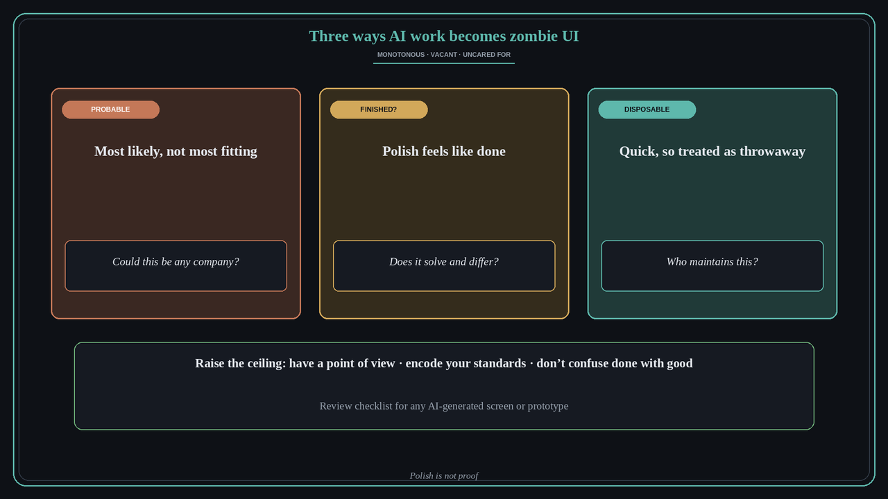

Zombie UI: three ways AI-built work goes generic, premature and uncared for
Source: Katie Dill (@lil_dill, Head of Design at Stripe), Lenny & Friends Summit talk, via Lenny Rachitsky (@lennysan)
original post
What it claims
Katie Dill names three watch points that together produce “zombie UI”: interfaces that are monotonous, vacant or uncared for, built from patterns that don’t suit the context. Probable: LLMs return the most probable answer, meaning what is popular or has worked before, not what is specific to your brand and your users. Her example is a Korean barbecue restaurant site that looks exactly like a SaaS landing page. Finished? AI makes things feel finished very fast, often too early. A polished-looking interface can hide whether it really solves the problem or stands out. She compares it to a microwave burrito you put up with because it was fast. Disposable: work that is quick to make gets treated as throwaway, so nobody owns the long-term decision and nobody asks who will maintain it. In her own summary of the talk, she lists four ways to raise the ceiling: have a point of view, encode your standards into the machine, don’t confuse done with good, and unleash creativity and artistry.
Why it matters for a PO
POs now get AI-built prototypes and screens in refinement and Sprint Review, and they look done. The risk is accepting the most likely answer instead of the one that fits your users, and calling something Done because it has rounded corners. Each throwaway prototype also leaves behind an orphan someone has to maintain. Lesson 236 treats taste as restraint, and lesson 234 is about getting more varied ideas out of a model. This lesson adds a review checklist for one AI-generated artifact.
3 takeaways
- Probable: ask whether this could belong to any company. If you could swap the logo and it still works, it is generic.
- Finished? Polish is not proof. Before you accept it, ask whether it solves the user’s problem and whether it stands out.
- Disposable: name an owner and a maintenance plan before anything AI-built goes past the prototype stage.
Practice this week
At the next Sprint Review or design review with an AI-generated screen or prototype, ask three questions in order: (1) Probable: what about this is specific to our users and context? (2) Finished? What evidence shows it solves the problem, beyond looking polished? (3) Disposable: who owns and maintains this if we keep it? If you can’t answer the first two, it isn’t Done. Write one line of your team’s standard, a point of view or a rule the AI must follow, and add it to the prompt or design system for next time.
Also from
- Michael Chomsky (@michael_chomsky), original post: a concrete way to “encode your standards into the machine” for UI copy. Coding agents tend to pile gratuitous text onto interfaces: eyebrow labels above headings, extra subheads and helper captions. His fix is an explicit negative rule in the agent’s instructions, “no gratuitous text/additions or eyebrow elements”, pointing to a less-is-more reference. Replies add that models treat empty space as unfinished and fill it, so a stated negative constraint works better than a general ask for “clean” design. For a PO reviewing an AI-built screen: read each line of UI text and ask whether the user would still know what to do without it.